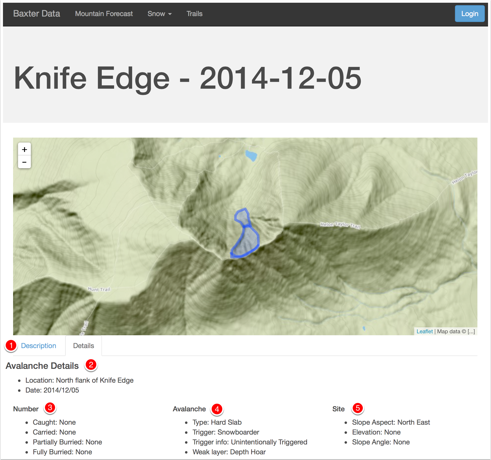

Public Help¶
Welcome to Baxter State Park’s pile of data!
We are working on providing public access to historical data from the park through this site.
Getting Started¶
If you are just wishing to view information, you can dive right into the site. This page has some basic help to navigate some of the features of the site.
If you have information to submit, you will need an account. Please contact the Park to arrange for access.
Avalanche Incidents¶
To view avalanche incidents select Snow > Avalanche Incidents from the top menu

This will bring you to a list of incidents, ordered by date (newest to oldest). From there click on an incident to view details about that incident.
{kind=link}
An incident page will show a map if detailed geographical data is available for an avalanche, like the Crown, Bed Surface, and Debris Fields.
- Tabs between Description and Details
- The Details tab starts out with general data about the avalanche incident with more detail available below.
- Number of people involved in the incident
- Details about how the avalanche occurred.
- General site information.
Hit Description for the observers writeup about an incident.
{kind=link}